CS184/284A Spring 2025 Homework 3 Write-Up
Link to webpage: https://cal-cs184-student.github.io/hw-webpages-webpage/
Link to GitHub repository: https://github.com/cal-cs184-student/sp25-hw3-woohooo.git
Overview
In this homework, I generated rays and checked for intersections with triangles and spheres. I implemented a bounding volume hierarchy to speed up the rendering process. I implemented direct illumination, indirect illumination, and global illumination. And finally, I used the Russian Roulette method and adaptive sampling. Going into this homework, I didn’t have the strongest understanding of how direct, indirect, and global illumination work, so this assignment was really helpful in solidifying my understanding of these methods and showed me the distinctions between them. This project was challenging but incredibly rewarding; I’m very proud of many of the images I rendered.
Part 1: Ray Generation and Scene Intersection
Rays help determine visibility, shadows, and lighting in graphics.
Rays are represented as having an origin \( o \) and a direction vector \( d \), and depending on time \( t \):
\(r(t) = o + td\).
To generate rays with generate_ray(), I take normalized image coordinates
\( (x, y) \) and convert them into rays in the camera space.
In going from the image space to the camera space, the bottom left corner \((0,0)\) in image space maps to
\(
\left(-\tan\left(\frac{hFov}{2}\right), -\tan\left(\frac{vFov}{2}\right), -1\right)
\)
in camera space, and the top right corner \((1,1)\) in image space maps to
\(
\left(\tan\left(\frac{hFov}{2}\right), \tan\left(\frac{vFov}{2}\right), -1\right)
\)
where \( hFov \) and \( vFov \) are field of view angles.
The ray created in camera space starts at the camera and goes through the calculated coordinates.
In world space, Raytrace_pixel() takes \( ns\_aa \) samples in a pixel.
At each random sample in that pixel, I generate a ray by calling generate_ray() and then call
est_radiance_global_illumination on that ray. The radiance across these sampled rays is
averaged to update the pixel at \( (x, y) \).
After generating these rays, they are tested for intersections with scene geometry to determine if
and where they hit. In Triangle::intersect(), I implement the Möller-Trumbore algorithm,
in which I determine the edges of the triangle, compute the determinant to determine if the ray is parallel
to the triangle (in which case there cannot be an intersection), and compute the barycentric coordinates of
the plane-intersection point (the point at which the ray intersects the plane defined by the triangle).
If the barycentric coordinates indicate that
the intersection point lies within the triangle, I return true and populate the input intersection structure.
|
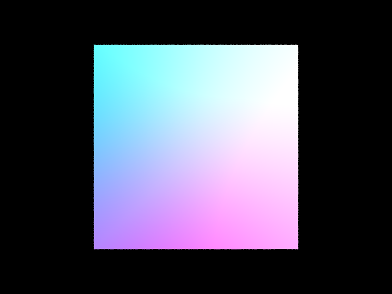
|
|

|
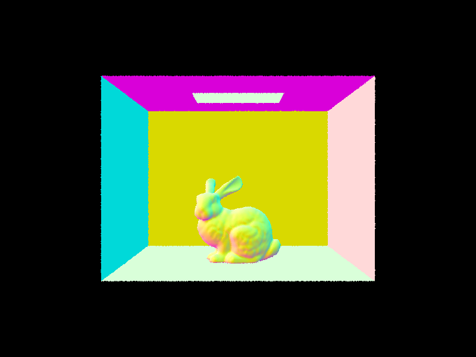
|
Part 2: Bounding Volume Hierarchy
In construct_bvh(), I start by creating a
bounding box and expanding it to encompass all of
the primitives from start to end.
This bbox is used to initialize a new node.
If the number of primitives from start to end
is under max_leaf_size, I assign node->start
and node->end and return the BVHNode:
this is a leaf node and the base case.
Otherwise, I establish the left and right
children of the node. To split my bbox, I
used the longest axis, calling bbox.extent
and evaluating the \(X\), \(Y\), and \(Z\) axes.
I then find the average of the centroid's selected coordinate
(\(X\), \(Y\), or \(Z\)), to split
the primitives across the split axis, into two vectors.
I then make two recursive calls to construct_bvh(),
one for the left child (containing primitives less than the split point)
and one for the right child (containing primitives greater than or equal to the split point),
and then return the BVHnode.
Images rendered with BVH acceleration
|
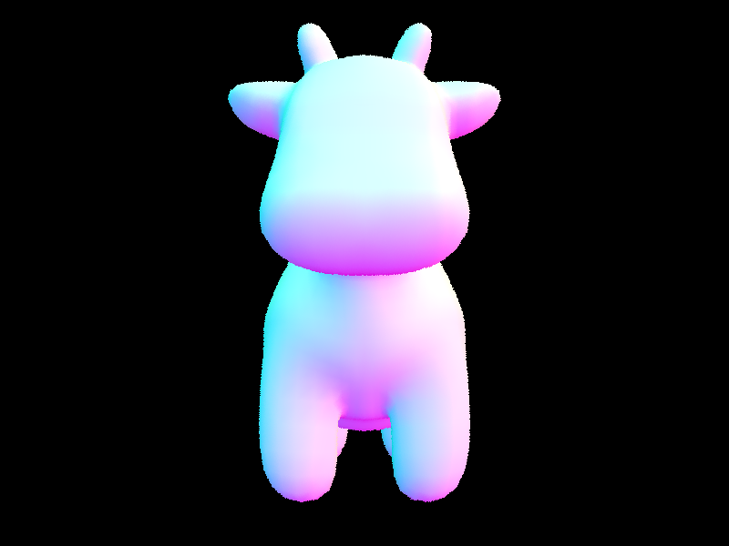
|
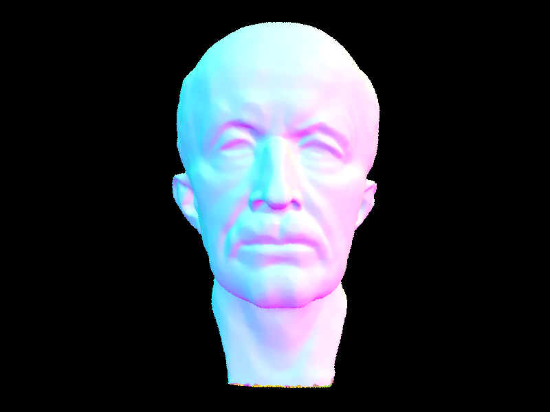
|
|
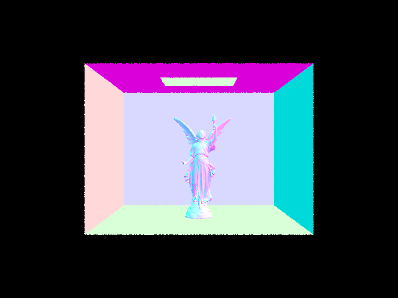
|
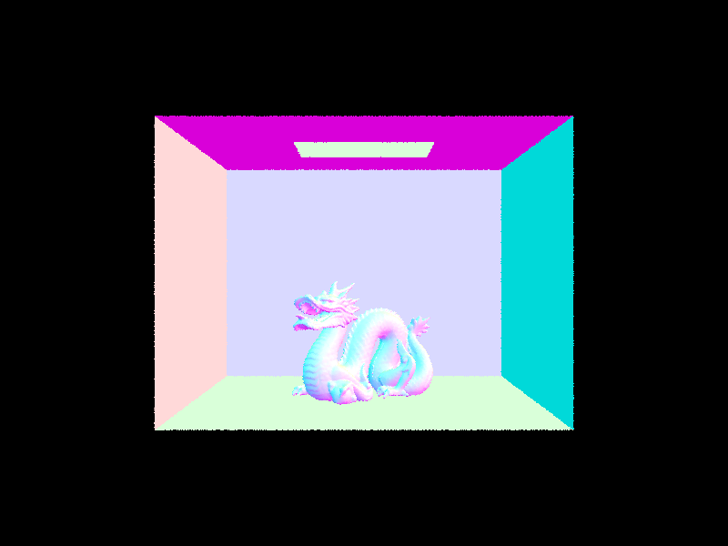
|
Rendering dae/meshedit/cow.dae without BVH
took 3.0079 seconds, rendering with BVH took 0.0003 seconds.
Rendering dae/meshedit/maxplanck.dae without BVH
took 42.751 seconds, rendering with BVH took 0.0493 seconds.
And rendering dae/sky/CBlucy.dae without BVH took
254.1081 seconds, rendering with BVH took 0.0343 seconds.
Using a BVH, we can eliminate the need to check
ray intersections with all of the primitives.
In BVHAccel::intersect(), I return
false if the ray does not intersect
the BVHNode’s bounding box; otherwise,
I check for intersections with the left and right child nodes.
Only if a ray intersects a leaf BVHNode
do we check for ray intersections with the primitives
and determine the closest intersection.
This significantly reduces the number of
primitive intersections that need to be assessed,
reducing the time it takes to render.
Part 3: Direct Illumination
In my implementation of estimate_direct_lighting_hemisphere(),
I take num_samples samples, uniformly sampling incoming
ray directions of the hemisphere. I start by sampling a
hemisphereSampler and converting the resulting
coordinates to world space (wi). I create a ray with
hit_p as the origin and wi as the direction vector.
If there is an intersection between that ray and a light source,
I calculate the emission using get_emission(),
evaluate the bsdf(), and determine the cosine term.
Updating L_out as follows:
\[
L_{\text{ out}} += \frac{\text{bsdf} \times \text{emitted radiance} \times \cos{\theta}}{\text{pdf}}
\]
In this instance, because I’m uniformly sampling, the pdf is set
to \( \frac{1}{2\pi} \). Finally, I average L_out by
dividing by num_samples.
In my implementation of estimate_direct_lighting_importance(),
I iterate through the lights of the scene, sampling lights rather than sampling
uniform directions in a hemisphere. If the light is a point light source,
I only sample once; otherwise, I sample each light ns_area_light times.
I used SceneLight::sample_L() to sample. This function returns
the emitted radiance, writes a world-space unit vector wi
giving the sampled direction between hit_p and the light source,
writes a distToLight double giving the distance between hit_p
and the light source in the wi direction, and provides a pdf for the wi
direction. From here, I created a ray with hit_p as the origin
and wi as the direction vector. I set the ray’s max_t
to be distToLight, so that when I check for intersections,
potential occlusions behind the light source do not have an impact.
Next, I check for intersections, which would indicate something blocking the light;
if there is no intersection (nothing is blocking), I calculate:
\[
L_{\text{ light}} += \frac{\text{bsdf} \times \text{emitted radiance} \times \cos{\theta}}{\text{pdf}}
\]
L_light is summed across the num_samples iterations specific to each
light source and then divided by num_samples
before being added to L_out. L_out represents the outgoing light
and is composed of the L_light contributions from each light.
Both direct lighting functions essentially use Monte Carlo integration to approximate
the integral of incoming light.
Images rendered with both implementations of the direct lighting function
estimate_direct_lighting_hemisphere() |
estimate_direct_lighting_importance() |
|
|---|---|---|
| dae/sky/CBempty.dae |
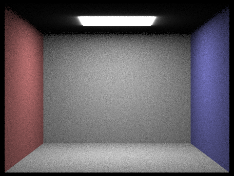
|
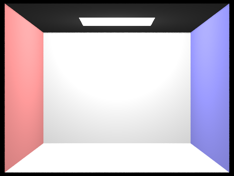
|
| dae/sky/CBspheres_lambertian.dae |
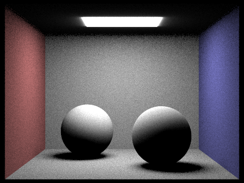
|
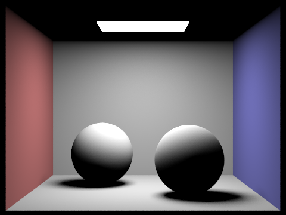
|
| dae/sky/CBbunny.dae |
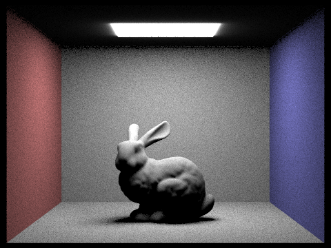
|
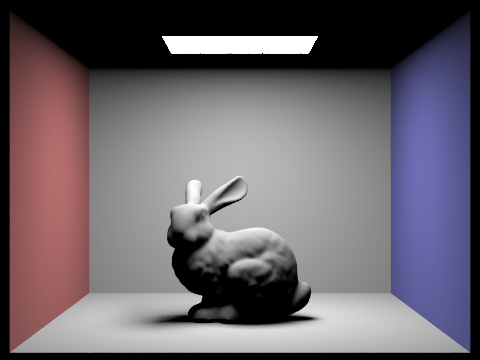
|
estimate_direct_lighting_hemisphere() samples directions uniformly over
the hemisphere, leading to high variance. As seen above, the images rendered with
estimate_direct_lighting_hemisphere() are grainier and have more noise.
Alternatively, estimate_direct_lighting_importance() samples lights in the scene,
thereby focusing samples on the most important parts of the scene. This results in the images
rendered with estimate_direct_lighting_importance() appearing smoother and
more accurate.
dae/sky/dragon.dae with 1, 4, 16, and 64 light rays using light sampling
|
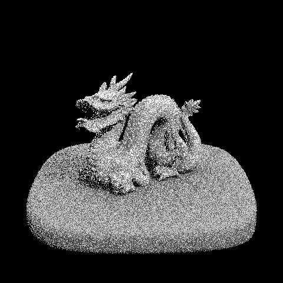
|
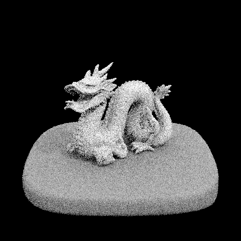
|
|
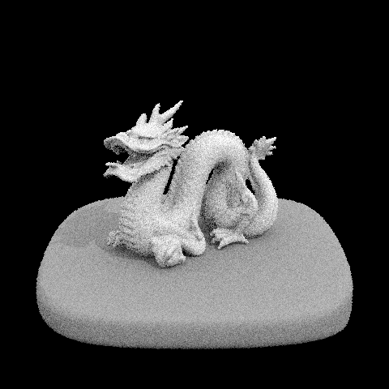
|
|
As shown above, as the number of samples increases per light area, the images become smoother and less noisy. With 1 sample per light area, the soft shadows are very grainy, whereas with 64 samples per light area, transitions from light to dark are more seamless.
Part 4: Global Illumination
My implementation of indirect lighting starts with est_radiance_global_illumination().
In this function, I set L_out to be the result of zero_bounce_radiance().
If the max_ray_depth is greater than or equal to one, I call at_least_one_bounce_radiance(),
before returning L_out.
at_least_one_bounce_radiance() starts by calling one_bounce_radiance().
If the depth of the ray is less than or equal to one, we have completed all max_ray_depth indirect bounces
and return L_out (this is our base case). Otherwise, I randomly sample an incoming ray direction using
sample_f(), setting wi to the sample direction and pdf to the sample probability.
From here, I create a ray with hit_p as the origin and wi (in world coordinates) as the direction vector.
The new ray’s depth is set as the current ray’s depth minus one (this is how I track the completion of an indirect bounce
and ensure max_ray_depth bounces are completed).
If this new ray intersects a light source, then a recursive call is made to at_least_one_bounce_radiance()
to evaluate the next indirect bounce.
In my implementation, if isAccumBounces is true, L_out is updated by taking a running sum to
accumulate all light along the path. Otherwise, if isAccumBounces is false, L_out is continuously
overwritten to reflect the light at that specific max_ray_depth bounce.
Images with global illumination
|
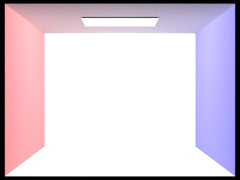
|
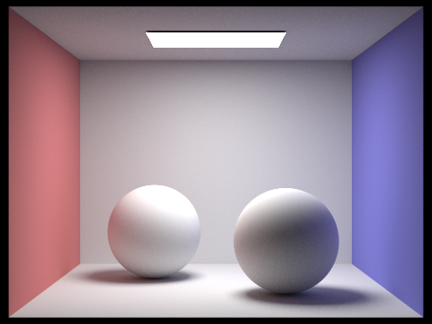
|
|
dae/sky/CBspheres_lambertian.dae isolating direct and indirect illumination
|
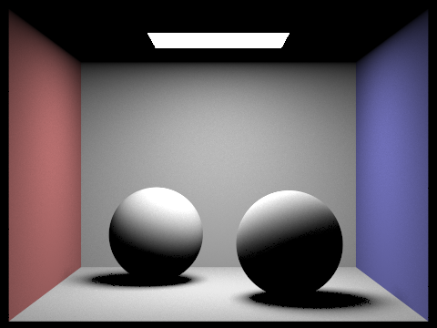
|
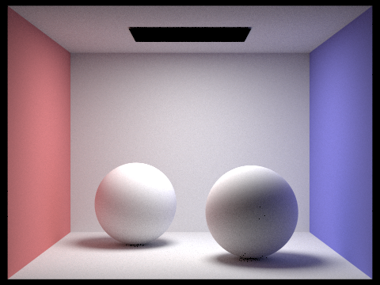
|
In the above images, direct illumination refers to the light coming directly from the light source, and indirect illumination refers to the light bouncing off surfaces.
dae/sky/CBbunny.dae rendering with m bounces of light
isAccumBounces = false |
isAccumBounces = true |
|
|---|---|---|
max_ray_depth = 0
|
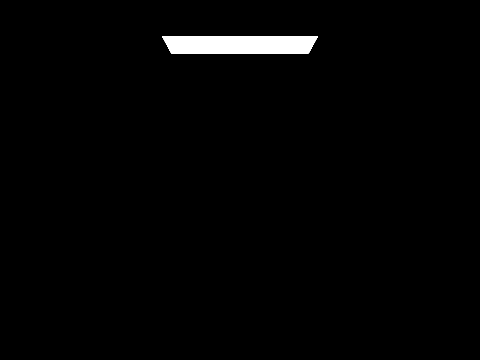
|
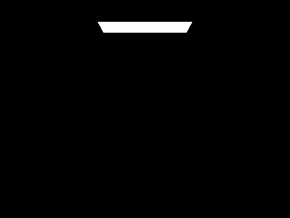
|
max_ray_depth = 1
|
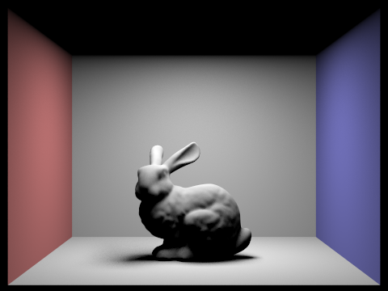
|
|
max_ray_depth = 2
|
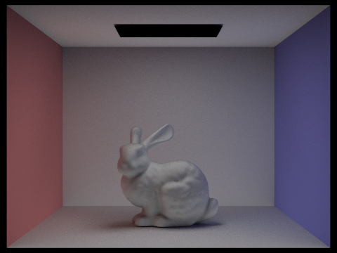
|
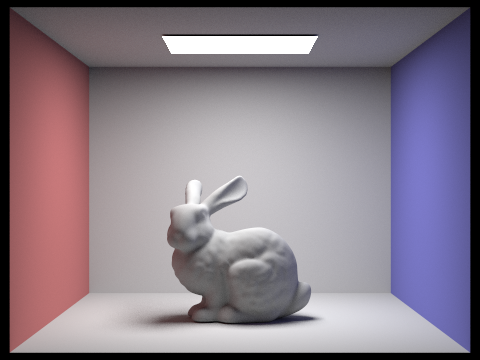
|
max_ray_depth = 3
|
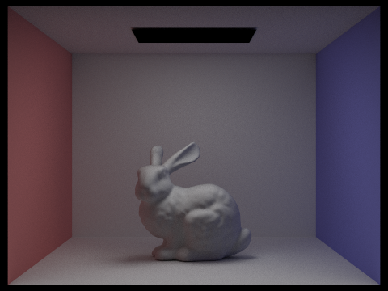
|
|
max_ray_depth = 4
|
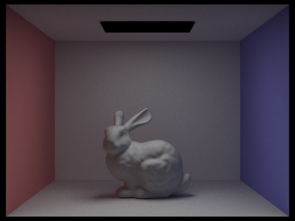
|
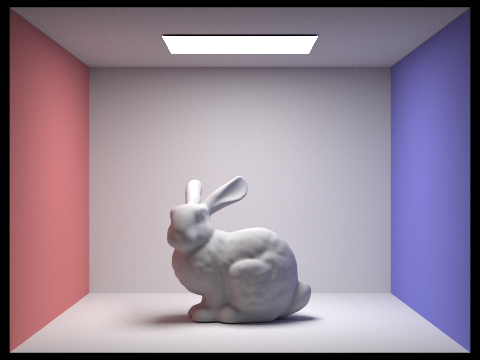
|
max_ray_depth = 5
|
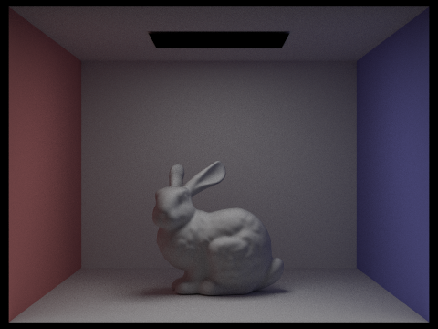
|
|
In the 2nd bounce of light (m=2), we can observe that the white walls and the bunny
now show some red and blue hues reflected from the red and blue walls in the scene.
Additionally, the ceiling is now visible, as light has reflected back up towards the
light source, and the red and blue walls themselves are a bit more toned down.
In the 3rd bounce of light (m=3), the walls and the ceiling are a bit dimmer,
as the light is now bouncing back, as opposed to hitting the wall as we saw in the 2nd bounce.
The 2nd and 3rd bounces enhance the realism of this image,
illuminating other parts of the scene, blending colors, and naturally diffusing the light.
dae/sky/CBbunny.dae Russian Roulette rendering with m bounces of light
|
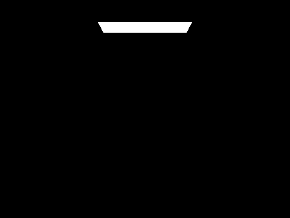
|
|
|
|
|
|
|
|
To implement Global Illumination with Russian Roulette, in at_least_one_bounce_radiance(),
I used the coin_flip function to terminate bouncing with a probability of \(0.35\)
(returning L_out prematurely). If the function does not terminate, the calculated indirect radiance
found by making the recursive call to at_least_one_bounce_radiance() is divided by \((1 - 0.35\))
to maintain an unbiased estimate of radiance. Russian Roulette provides a probabilistic way to terminate light paths
other than using a fixed recursion depth.
dae/sky/CBbunny.dae Russian Roulette rendering with m bounces of light
|
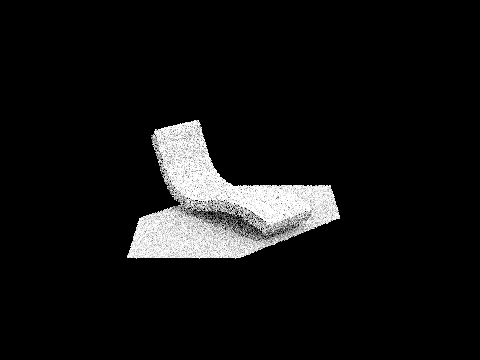
|
|
|
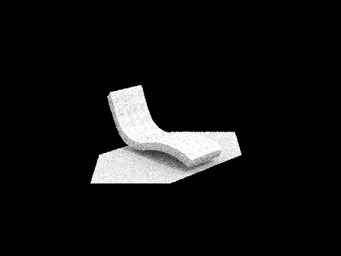
|
|

|
|
|
|
As the samples per pixel rates increase, the quality of the rendering improves. With only 1 sample per pixel the image is incredibly grainy with no fine details. At 16 samples per pixel, the details of the bench are more evident, but there is still a little bit of noise. And finally at 1024 samples per pixel, the image is much more accurate and seamless.
Part 5: Adaptive Sampling
Adaptive sampling attempts to avoid sampling a high, fixed number of
samples per pixel by adjusting the number of samples
based on the variance of pixel values so that we may concentrate
samples in the more difficult parts of the image.
I implemented adaptive sampling in raytrace_pixel().
This function generates camera rays and traces them
through the scene by using est_radiance_global_illumination().
We define \( I \) as
\( I = 1.96 \cdot \frac{\sigma}{\sqrt{n}} \) to measure the pixel’s convergence.
\( I \) is smaller when the variance
is lower, or the number of samples is higher. We determined that if
\( I \leq \text{maxTolerance} \cdot \mu \), the pixel has
converged and we no longer need to sample it. In my implementation,
I track the mean and variance in each iteration
and calculate and check \( I \) with a frequency determined by samplesPerBatch.
In this way, the radiance is equal to
the accumulated radiance divided by sample_count.
Images and Sampling Rate with Adaptive Sampling
|
|
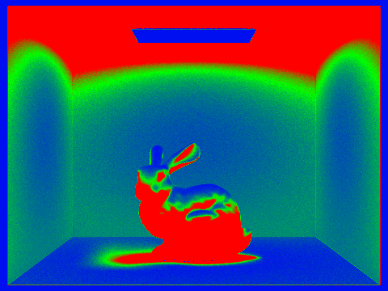
|
|
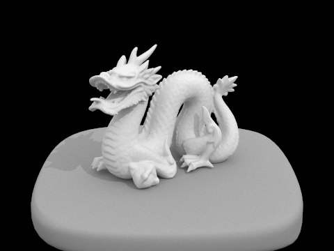
|
|